Edgi-Talk_M33_Driver_All 多功能 Demo 工程
中文 | English
简介
本工程基于 Edgi-Talk 平台，运行于 RT-Thread 实时操作系统 (M33 核)，集中集成多个常用外设 demo，便于在同一个固件中验证传感器、ADC、HyperRAM、按键中断、RTC、SD 卡文件系统、片外 Flash 文件系统和 WAV 音频播放功能。
当前工程包含以下 MSH 命令：
命令 |
功能 |
|---|---|
|
读取 AHT10/AHT20 温湿度 |
|
读取 LSM6DS3 六轴传感器数据 |
|
音频录音到播放实时回环 |
|
播放 WAV 音频文件 |
|
读取 ADC1 Channel 1 电压 |
|
HyperRAM 基础读写校验 |
|
HyperRAM 带宽测试 |
|
注册 P8.3 按键中断，按下后翻转蓝色 LED |
|
读取或设置 RTC 时间 |
|
SD 卡文件写入和读取测试 |
|
SD 卡顺序读写测速 |
|
|
|
CoreMark CPU 性能基准测试 |
软件说明
工程基于 Edgi-Talk 平台开发。
使用 RT-Thread 作为操作系统内核。
各 demo 通过 MSH 命令手动触发，避免多个外设测试上电后同时运行。
Audio demo 使用 RT-Thread Audio 框架、PDM 麦克风和 ES8388 Codec；启动后会占用
mic0与sound0。WavPlayer demo 使用 RT-Thread
wavplayer软件包播放 WAV 文件，播放时会占用sound0，不能和demo_audio回环同时运行。CoreMark 使用 RT-Thread
CoreMark软件包，默认迭代次数为36000，通过 MSH 命令手动运行。SD 卡挂载由公共文件系统初始化逻辑处理，插卡后自动挂载，拔卡后自动卸载。
片外 Flash 通过 FAL 注册为
norflash0，其中filesystem分区会以 littlefs 挂载到/flash。普通 SDIO
CMD5 arg=0超时探测日志已静默处理，避免正常 SD 卡识别过程中反复刷屏。
注意事项
注意： 本工程要求使用 RT-Thread Studio 2.2.9 或以上版本。
M33 工程的串口日志不会通过板载 DAP 虚拟串口直接输出。查看
msh />和 demo 日志时，需要额外连接 USB 转串口硬件，例如 CH340。 位置如图下所示,RX接串口硬件的TX,TX接串口硬件的RX,上位机波特率115200:
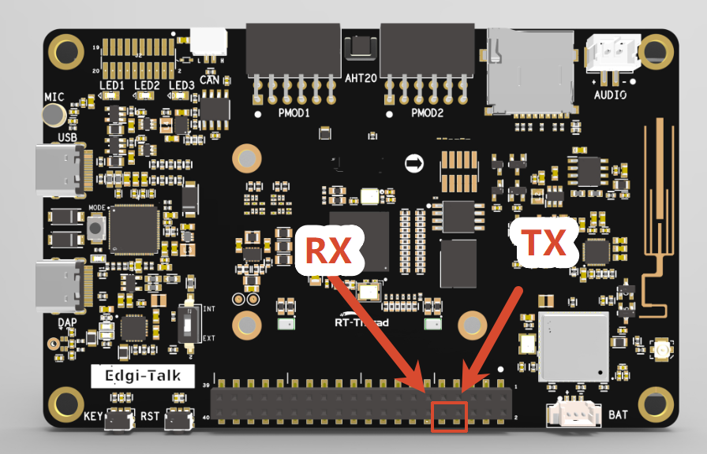
修改完成后保存配置，并重新生成代码。
SD 卡建议格式化为 FAT16/FAT32。
如果 SD 卡测速结果偏低，优先检查卡本身速度等级、文件系统碎片、SDIO 时钟、总线位宽和读写块大小。
/flash使用片外 Flash 的filesystem分区，首次挂载失败时会自动格式化；如果需要保留该分区数据，请不要随意执行整片擦除。若示例工程无法正常运行，建议先编译并烧录 Edgi_Talk_M33_Template 工程，确保初始化与核心启动流程正常，再运行本工程。
如需运行 M55 工程，建议先烧写 Edgi_Talk_M33_Template。该工程是干净的 M33 工程，适合作为 M55 启动前的基础固件。
AHT20 温湿度 Demo
功能说明
demo_aht20 使用 AHT10/AHT20 软件包，通过 i2c1 读取一次温度和湿度，并通过串口打印结果。设备句柄会缓存，重复执行命令时不会重复初始化传感器。
使用方法
demo_aht20
示例输出：
AHT10: temp 26.3 C, humidity 48.7 %
LSM6DS3 六轴传感器 Demo
功能说明
本 demo 移植自 Edgi_Talk_M33_LSM6DS3 示例工程，用于演示 LSM6DS3TR-C 六轴惯性测量单元（IMU） 的使用方法。LSM6DS3TR-C 集成三轴加速度计、三轴陀螺仪和温度传感器，支持 I2C/SPI 接口，常用于姿态检测、运动识别、手势识别和可穿戴设备。
当前命令会：
通过
i2c0检测 LSM6DS3 设备 ID。复位传感器并配置输出速率、加速度量程和陀螺仪量程。
轮询读取三轴加速度、三轴角速度和温度。
通过串口打印数据；不会在上电后自动循环打印。
硬件说明
LSM6DS3TR-C 接口
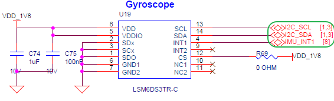
BTB 座子
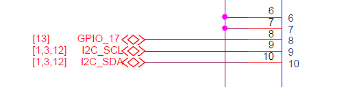
MCU 引脚
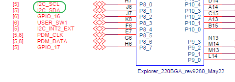
使用方法
demo_lsm6ds3
demo_lsm6ds3 10 200
参数说明：
count：采样次数，默认 5；设置为 0 时持续采样。delay_ms：每次采样间隔，默认 500 ms。
示例输出：
LSM6DS3: found on i2c0 addr 0x6A
LSM6DS3 sample: count=5, delay=500 ms
Acceleration [mg]: 15.23 -3.12 1000.45
Angular rate [mdps]: 2.50 -1.25 0.75
Temperature [degC]: 26.54
Audio 录放 Demo
功能说明
本 demo 移植自 Edgi_Talk_M33_Audio 示例工程，用于演示 PDM 麦克风采集 + ES8388 Codec 播放 的实时音频回环。Audio 设备由音频总线接口、控制总线接口、Codec、扬声器和麦克风组成，RT-Thread Audio 框架负责音频设备注册、打开关闭、读写、音量调节和流控制。
当前命令会：
打开
mic0录音设备和sound0播放设备。显式配置音频格式为 16 kHz、单声道、16 bit，和 PDM 麦克风输出保持一致。
设置扬声器音量和麦克风增益。
创建后台线程，持续读取麦克风数据并写入扬声器。
通过 MSH 命令手动启动/停止，不会在上电后自动进入回环。
注意： 原 Audio 工程使用 P8.3 按键切换播放状态。当前多 demo 工程中 P8.3 已用于
demo_key，因此 Audio demo 改为 MSH 命令控制，避免两个 demo 同时注册同一个按键中断。
硬件说明
嵌入式音频系统组成
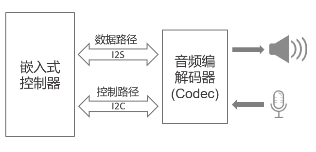
ES8388 连接接口

喇叭接口

控制引脚
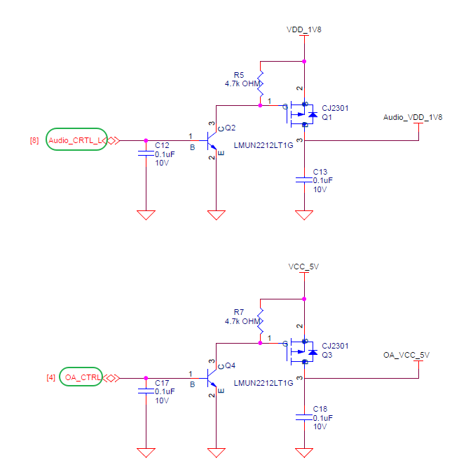
BTB 座子

MCU 引脚
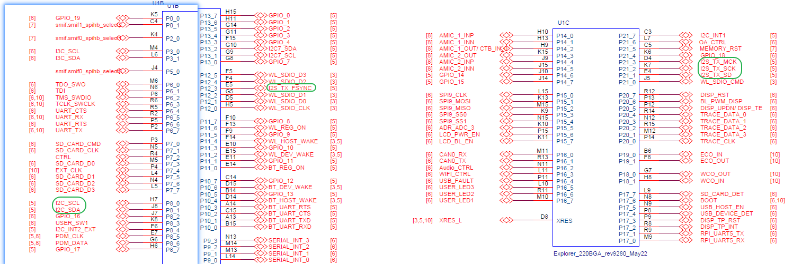
实物图位置
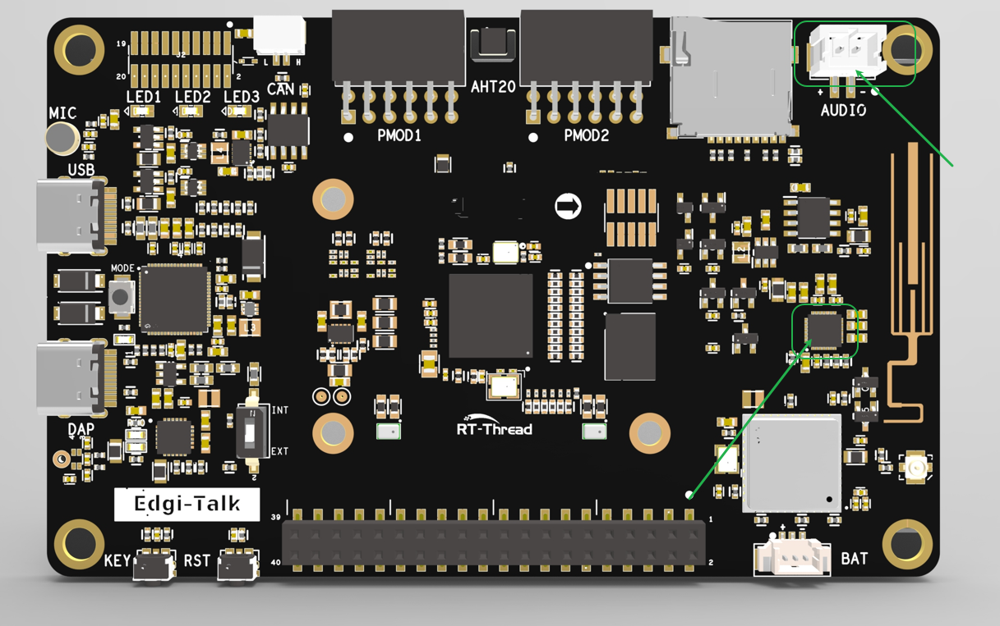
使用方法
demo_audio start
demo_audio start 60 30
demo_audio status
demo_audio stop
参数说明：
speaker_volume：扬声器音量，默认 60。mic_gain：麦克风增益，默认 30。
示例输出：
Audio loopback started: speaker=60, mic_gain=30
Audio loopback: running, speaker=60, mic_gain=30
Stopping audio loopback...
Audio loopback stopped
WavPlayer 音频播放 Demo
功能说明
本 demo 移植自 Edgi_Talk_M33_WavPlayer 示例工程，用于演示 RT-Thread wavplayer 软件包 + Audio 设备驱动 + 文件系统 的 WAV 文件播放流程。wavplayer 会读取 WAV 文件头，按文件中的采样率、声道数和 16 bit 位宽配置 sound0，再通过 ES8388 Codec 输出到扬声器。
当前工程启用了：
wavplay播放命令。optparse命令行参数解析软件包。播放设备
sound0。
当前工程未启用 wavrecord 录音命令；录音功能仍建议使用 demo_audio 回环验证，避免和多 demo 工程里的音频资源管理互相干扰。
注意：
wavplay和demo_audio都会占用sound0。播放 WAV 前请先执行demo_audio stop，确认回环 demo 已停止。
硬件说明
音频系统组成
ES8388 连接接口
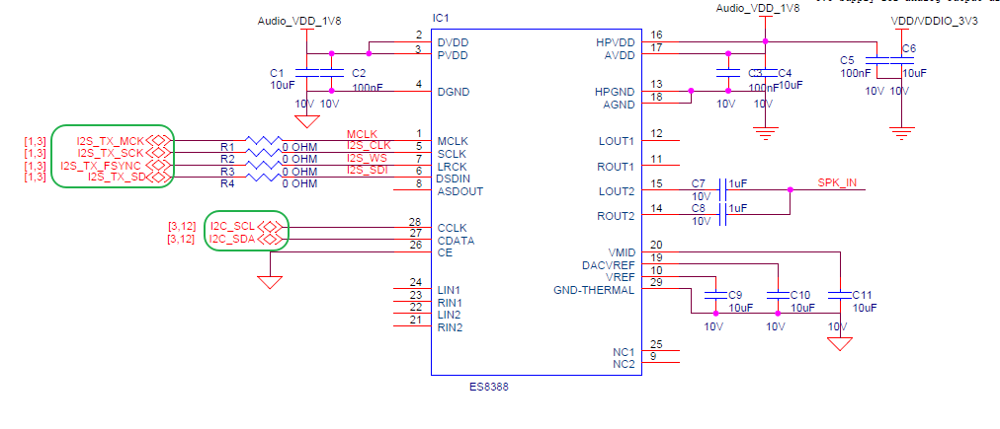
喇叭接口
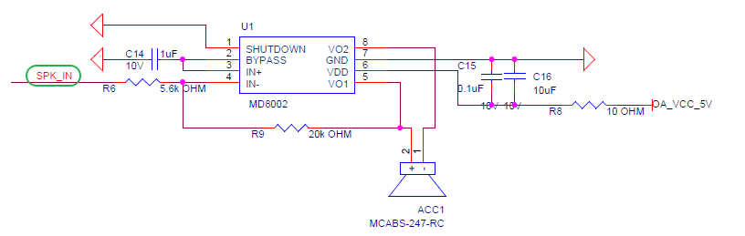
控制引脚

BTB 座子
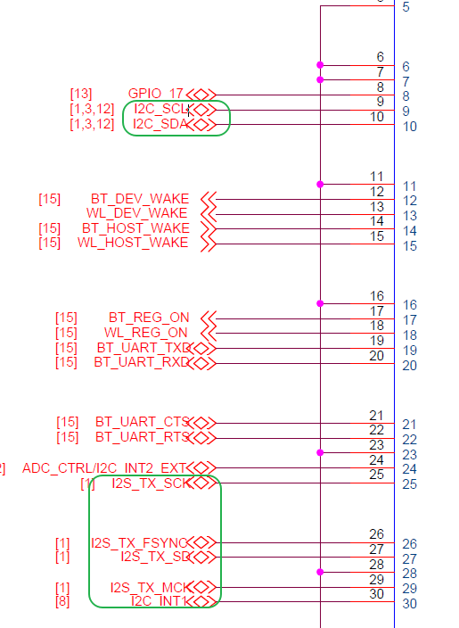
MCU 引脚

实物图位置

使用方法
将 WAV 文件放到已挂载的文件系统中，例如 SD 卡挂载到 /sdcard 后：
cd /sdcard
wavplay -s 16000.wav
也可以直接使用完整路径：
wavplay -s /sdcard/16000.wav
常用命令：
wavplay -h
wavplay -s /sdcard/16000.wav
wavplay -t
wavplay -p
wavplay -r
wavplay -v 80
参数说明：
-s <file>：开始播放指定 WAV 文件。-t：停止播放。-p：暂停播放。-r：恢复播放。-v <0-100>：设置播放音量。
示例输出：
msh /sdcard>wavplay -s 16000.wav
[I/WAV_PLAYER] play start, uri=16000.wav
CoreMark 性能测试 Demo
功能说明
本 demo 启用了 RT-Thread CoreMark 软件包，用于进行 CPU 核心性能基准测试。当前配置参考 Edgi_Talk_M55_CoreMark 工程，默认迭代次数为 36000，未启用浮点版本。
使用方法
core_mark
运行后会打印 CoreMark 参数、耗时、校验结果和最终分数。测试时建议停止其他高负载 demo，避免 SD 卡、音频或传感器轮询影响结果。
ADC Demo
功能说明
本 demo 移植自 Edgi_Talk_M33_ADC 示例工程，用于演示 ADC（模数转换器） 的使用方法。ADC 会将连续的模拟电压转换为数字值，供 MCU 后续处理。
注意： 当前硬件连接中，ADC 仅用于采集电池电压；树莓派接口及其他外部接口未接入该 ADC 通道，不能通过本命令采集。
当前命令会：
使能 ADC1 Channel 1。
首次执行时拉高 P8.4 ADC 电源控制引脚。
读取一次 ADC 原始值并换算为电压。
硬件说明
连接接口
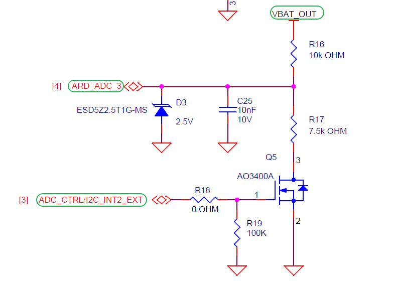
BTB 座子
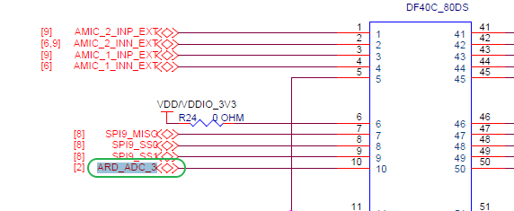
MCU 引脚
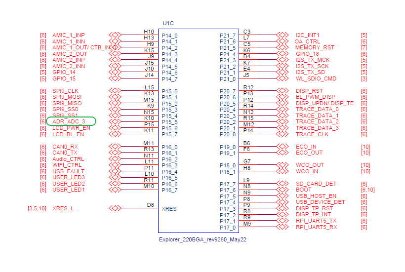
实物图位置
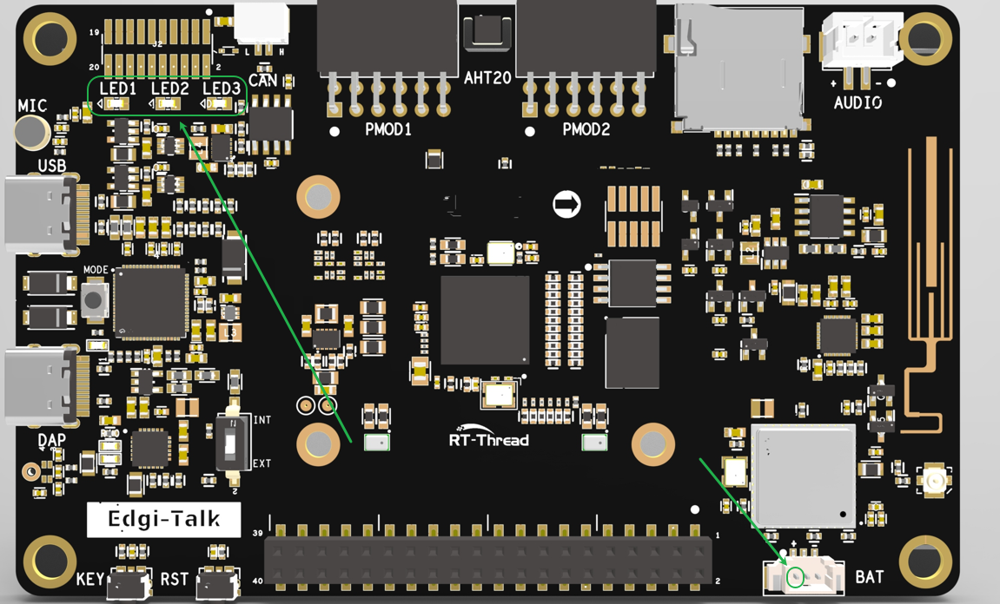
使用方法
demo_adc
示例输出：
CH1: 3.123 V (raw=1340)
HyperRAM Demo
功能说明
本 demo 移植自 Edgi_Talk_M33_HyperRam 示例工程，用于验证 HyperRAM 映射、基础读写和带宽性能。HyperRAM 驱动初始化后，内存区域会映射到系统地址空间，应用可用于大块缓存或外部堆。
基础读写校验
demo_hyperram
该命令会申请一段 HyperRAM 空间，写入测试数据并读回校验。
带宽测试
demo_hyperram_speed
demo_hyperram_speed 1024 8
参数说明：
size_kb：单次测试数据大小，默认值由 demo 内部设置。loops：循环次数，数值越大，统计结果越稳定。
测试内容包括顺序写、顺序读和内存拷贝速度。
按键中断 Demo
功能说明
本 demo 移植自 Edgi_Talk_M33_Key_Irq 示例工程，用于演示 RT-Thread PIN 驱动的 GPIO 中断用法。
当前命令会：
配置 P8.3 为上拉输入。
注册下降沿中断回调。
每次按键触发后翻转 P16.5 蓝色 LED，并在串口打印状态。
硬件说明
按钮接口
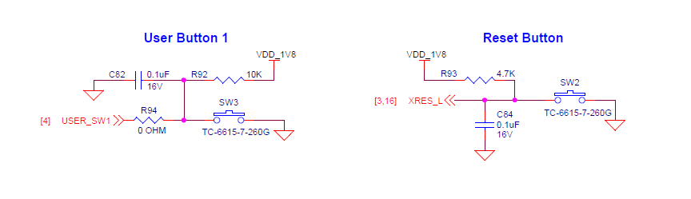
BTB 座子
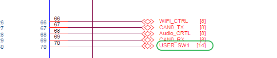
MCU 接口
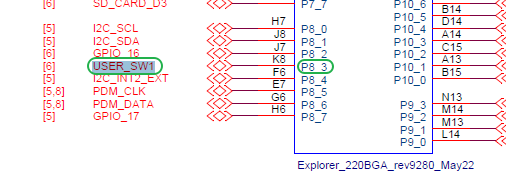
实物图位置
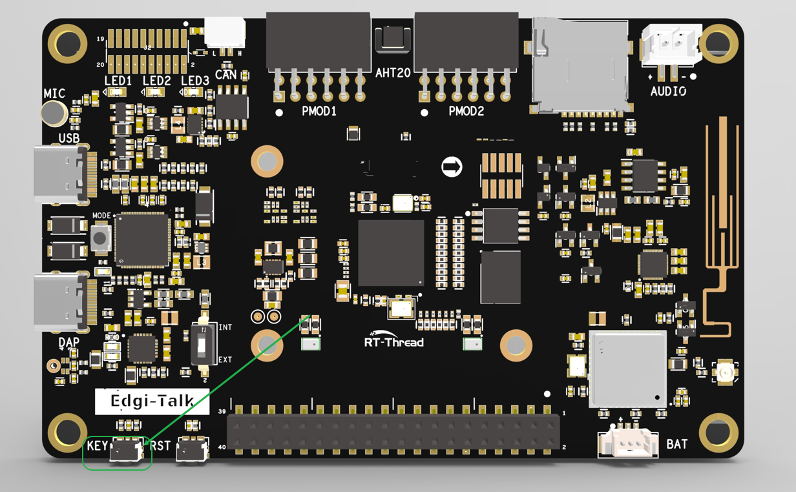
使用方法
demo_key
示例输出：
Key IRQ ready. Press the button on P8.3.
button pressed (led ON)
button pressed (led OFF)
RTC Demo
功能说明
本 demo 移植自 Edgi_Talk_M33_RTC 示例工程，用于演示 RTC（实时时钟） 的读取和设置。RTC 可用于系统时间、日志时间戳、定时任务和低功耗唤醒等场景。
使用方法
读取当前时间：
demo_rtc
设置时间后读取：
demo_rtc 2026 7 17 10 30 0
示例输出：
Fri Jul 17 10:30:00 2026
SD 卡 Demo
功能说明
本 demo 移植自 Edgi_Talk_M33_SDCARD 示例工程，用于演示 SD 卡挂载、文件写入、文件读取和读写测速。SD 卡是一种非易失性存储设备，常用于日志记录、配置文件保存、音视频缓存等场景。
当前工程已加入热插拔处理：
上电过程中插入 SD 卡会自动挂载到
/sdcard。运行过程中拔出 SD 卡会自动卸载。
未插卡时会低频重扫，避免刷屏和线程栈溢出。
文件读写测试
demo_sdcard
该命令会向 /sdcard/demo_test.txt 写入一段文本，然后读回并打印。
顺序读写测速
demo_sdcard_speed
demo_sdcard_speed 8192 64
参数说明：
total_kb：测试文件总大小，默认4096 KB。block_kb：单次读写块大小，默认64 KB，最大64 KB。
Flash 文件系统 Demo
功能说明
本工程启用了 FAL + MTD NOR + littlefs，启动时会将片外 Flash 的 filesystem 分区自动挂载到 /flash。如果首次挂载失败，初始化逻辑会尝试格式化该分区并重新挂载。
Flash 分区配置如下：
分区 |
FAL 偏移 |
大小 |
用途 |
|---|---|---|---|
|
|
|
Wi-Fi 固件 |
|
|
|
Wi-Fi CLM 数据 |
|
|
|
Wi-Fi NVRAM |
|
|
|
蓝牙镜像 |
|
|
|
|
注意：
demo_flash_speed会在/flash下创建临时测试文件，测试完成后自动删除。该命令会触发 Flash 擦写，请避免在有重要数据的/flash分区上反复运行大容量测试。
顺序读写测速
demo_flash_speed
demo_flash_speed 512 4
参数说明：
total_kb：测试文件总大小，默认512 KB。block_kb：单次读写块大小，默认4 KB，取值范围1 KB到64 KB。
示例输出：
Flash speed test
file=/flash/flash_speed.bin, total=512 KB, block=4 KB
write 524288 bytes, 1234 ms, 0.41 MB/s (414 KB/s)
read 524288 bytes, 78 ms, 6.41 MB/s (6564 KB/s)
编译与下载
打开工程并完成编译。
使用 板载下载器 (DAP) 将开发板 USB 接口连接至 PC。
通过编程工具将生成的固件烧录至开发板，也可以在工程根目录执行：
.\m33_program.ps1
如需先整片擦除再烧录，可执行：
.\m33_program.ps1 -EraseAll $true
打开串口终端，进入
msh />后执行对应 demo 命令。
启动流程
系统启动顺序如下：
+------------------+
| Secure M33 |
| (安全内核启动) |
+------------------+
|
v
+------------------+
| M33 |
| (非安全核启动) |
+------------------+
|
v
+-------------------+
| M55 |
| (应用处理器启动) |
+-------------------+
注意： 安全核心固件已集成在 M33 工程的构建和打包流程中。请严格按照以上启动顺序准备并烧写固件，否则系统可能无法正常运行。
若要开启 M55，需要在 M33 工程 中打开配置：
RT-Thread Settings --> 硬件 --> select SOC Multi Core Mode --> Enable CM55 Core